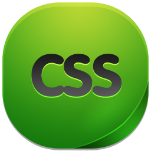
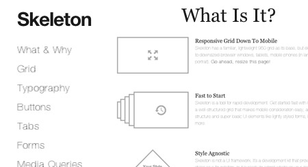

HTML is a markup language that web browsers use to interpret and compose text, images, and Myself as a
Junior Developer i can Create a web Page from the start.
create a proper structure for a website, using Elements tags label pieces of content such as "heading",
"paragraph", "table", and so on

CSS is an acronym for Cascading Style Sheets.
CSS is a style language that defines layout of HTML documents.
I Mostly apply my CSS skills when it comes to styling my pages, Nav bars, images, make progressive bars,
CSS is,
Wonderful language simply Because it makes your Page stands out when a User visit your website.
CSS describes how HTML elements are to be displayed on screen, paper, or in other media.
We get inline Css, External Css and internal Css
Inline - by using the style attribute in HTML elements
Internal - by using a style element in the head section
External - by using an external CSS file.
jQuery is a fast, small, and feature-rich JavaScript library. It
makes things like HTML document traversal and manipulation, event handling, animation, Me as a
developer i can
Manipulate images to hover, fade.
The jQuery library contains the following features:
HTML/DOM manipulation
CSS manipulation
HTML event methods
Effects and animations
AJAX
Utilities.

JavaScript is a programming language commonly used in web development.
It was originally developed by Netscape as a means to add dynamic and interactive elements to
websites. While
JavaScript is influenced by Java.
JavaScript is a client-side scripting language, which means the source code is processed by the
client's web
browser rather than on the web server.
This means JavaScript functions can run after a webpage has loaded without communicating with the
server.
For example, a JavaScript function may check a web form before it is submitted to make sure all the
required
fields have been filled out. The JavaScript code can produce an error message before any information
is actually
transmitted to the server.

A simple responsive framework for mobile friendly development..
IS SKELETON FRAMEWORK FOR YOU?
You should use Skeleton Framework if you're embarking on a smaller project or just don't feel like
you need all
the utility of larger frameworks.
Skeleton only styles a handful of standard HTML elements and includes a grid, but that's often more
than enough
to get started.
In fact, this site is built on Skeleton Framework and has ~200 lines of custom CSS (half of which is
the docking
navigation).

Bootstrap is a free and open-source front-end web framework for
designing websites and web applications.
It contains HTML- and CSS-based design templates for typography, forms, buttons, navigation and
other interface
components, as well as optional JavaScript extensions.
PHP is a server-side scripting language designed primarily for web development but also used as a general-purpose programming language. ...
PHP originally stood for Personal Home Page, but it now stands for the recursive acronym PHP: Hypertext Preprocessor.
I can Create a dynamic Website using Php, from the header to the footer. Using php functions to manipulate the web page.

MySQL is an open source relational database management system (RDBMS) based on Structured Query Language (SQL).
LAMP is a Web development platform that uses Linux as the operating system.
Apache as the Web server, MySQL as the relational database management system and PHP as the object-oriented scripting language.